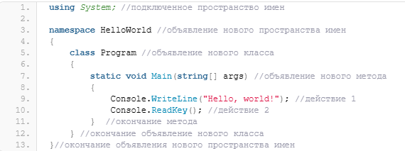
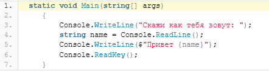

Содержание
Итак, наша первая программа в C# выглядит следующим образом:

Вначале идёт ключевое слово using с помощью которого мы подключили пространство имен System. Без подключения System мы бы не смогли воспользоваться классом Console.
Пространство имен System содержит фундаментальные и базовые классы .NET, определяющие часто используемые типы значений и ссылочных типов данных, события и обработчики событий, интерфейсы, атрибуты, исключения обработки и т.д.
Пространства имен (namespace) часто используются в программировании на C# для упорядочивания множества классов платформы .NET.
Далее идёт объявление нового пространства имен с названием HelloWorld. По умолчанию Visual Studio задала имя нового пространства имен по названию нашего проекта.
После строки с объявлением нового пространства имен идут фигурные скобки внутри которые расположен объявленный в пространстве имен класс с названием Program.
Так как C# имеет C-подобный синтаксис, то каждый блок кода заключается в фигурные скобки, а в конце строки обязательно ставится точка с запятой.
Пространства имен могут содержать внутри себя другие пространства имен или классы.
В нашем случае, в пространстве имен объявлен один класс с именем Program. Классы, объявляются подобно пространствам имен — вначале идет ключевое слово class, а, затем — имя класса. О классах мы поговорим позднее.
В классе Program объявлен единственный метод Main(). Метод Main — это точка входа приложения C#. В программе на C# может существовать только одна точка входа и когда вы запускаете приложение, то первым вызывается именно метод Main.
Посмотрим, что из себя представляет объявление нового метода на примере метода Main().
ключевое слово static означает, что метод Main() является статическим, а следующее за ним слово void — что этот метод не возвращает никаких значений.
О том, что такое статические методы в C# мы обязательно поговорим позднее, а пока посмотрим дальше на объявление метода. А далее в круглых скобках перечислены аргументы (параметры) метода. В нашем случае, в методе используется всего один параметр — это массив строк (string[]) с именем args. Этот массив содержит параметры с которыми запускается консольное приложение.
В нашей программе мы параметры метода не затрагивали, но в дальнейшем я покажу как ими можно пользоваться при работе с консольными приложениями.
Внутри метода располагаются действия, которые мы хотим выполнить в нашем приложении. В данном случае мы выполнили два действия:
Первое действие выводит на экран строку «Hello, world!». Второе же действие мы использовали как «заглушку» для того, чтобы наше приложение не закрывалось до тех пор, пока пользователь не нажмет какую либо клавишу.
Теперь мы можем немного видоизменить состав нашего метода Main(), например, вот таким образом:

Здесь мы в первой строке вывели т.н. приглашение пользователю ввести свое имя. После того как пользователь вводит имя и нажимает Enter программа переходит на следующую строку где переменной name типа string (строка) присваивается то значение, которое пользователь ввел на первом шаге.
Третья строка выводит на экран приветствие. При этом мы воспользовались таким действием как интерполяция строк о котором также поговорим позднее, когда будем рассматривать вопросы использования строк в C#.
Теперь можно нажать F5, ввести в консоли свое имя и увидеть результат работы программы/
Итак, на примере простенькой программы мы рассмотрели структуру приложения в C#. Любое приложение будет содержать как минимум одно пространство имен с объявленными в нем классами, которые, в свою очередь будут содержать в себе методы, поля и события о которых мы поговорим позднее.